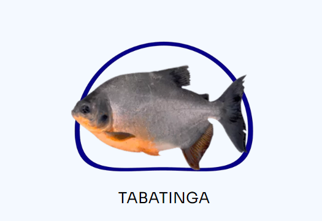
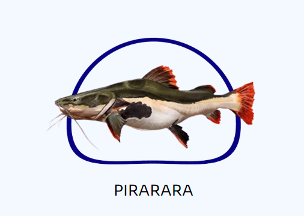
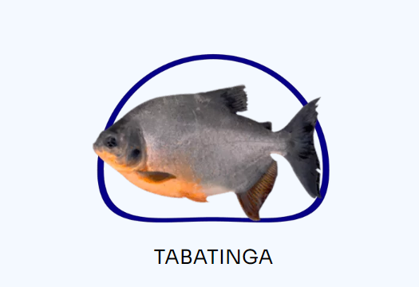
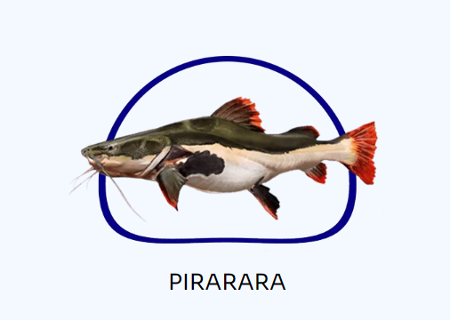

O pirarucu é um dos maiores peixes de águas doces fluviais e lacustres do Brasil. Seu nome se originou de dois termos tupis: pirá, "peixe" e urucum, "vermelho", devido à coloração de sua cauda.
VALOR DO MILHEIRO : $15.000,00
Assim como o tambacu, a tambatinga é um peixe híbrido, obtido pelo cruzamento entre os ovócitos de uma fêmea de tambaqui e o sêmen de um macho de pirapitinga (Piaractus brachypomus). Tambatinga. (Foto:Fábio Rosa Sussel/Divulgação) De acordo com o pesquisador, atualmente, o híbrido tambatinga é mais produzida que o tambacu no Estado do Pará, perdendo apenas em produção para tambaqui. ” A produção desse híbrido tem a preferência dos piscicultores da região Norte do Brasil devido ao melhor desempenho produtivo. Os produtores afirmam que a tambatinga cresce mais que o tambaqui e o tambacu. Além disto a tambatinga, apresenta cabeça menor que o tambaqui e o tambacu, o que lhe confere um melhor rendimento de carcaça, ou seja, tem mais de carne e rendimento de filé em relação ao tambaqui e ao tambacu”, pontua.
VALOR DO MILHEIRO: $600,00
A Pirarara é um peixe nativo de grande porte da região norte do país. Sua particularidade como a robustez e a beleza, permite ser uma espécie de grande importância comercial. Esta espécie, se adapta aos diversos sistemas de produção, pois apresenta fácil manejo, bom desempenho zootécnico e resistência as doenças.
VALOR DO MILHEIRO : $5.000,00
Empresa pioneira de venda de milheiros, possuindo 3 tipos de peixes raros no nossa catalogo no momento, Seja você um entusiasta experiente ou um novato curioso, a Peixenutos é o lugar perfeito para explorar, aprender e se encantar com a beleza e a diversidade do mundo subaquático. Estamos ansiosos para compartilhar essa jornada aquática emocionante com você na Peixenuto, onde a paixão pelos peixes encontra seu lar!
LOCALIZADA EM LONDRINA, RUA GARFOS TORTOS 642, TEL (43) 3338-3889